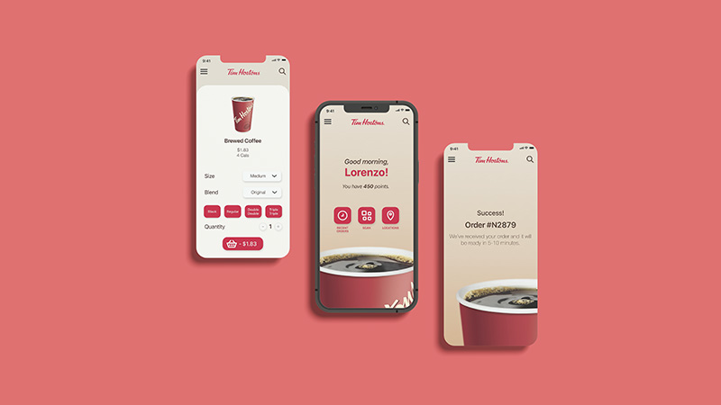

Redesigning Canada's favourite Coffee App
Project Type
- Mobile & Web App Design
Role
- UX Designer
- UX Researcher
Duration
- September 2022 - November 2022
Team
- Lorenzo Queano - Designer
Software
- Adobe XD
- Adobe Photoshop
Other Tools Used
- Miro Website
As a big coffee drinker and an avid fan of the brand, I knew how many times I wished that someone would redesign the Tim Hortons app.
The current Tim Hortons app is cluttered with ads and the layout looks very messy. Additionally, the app itself glitches and is slow. Overall, the app causes cognitive overload on its users slowing down the app's performance and decreasing user satisfaction. From a simple survey amongst the Tim Hortons App users, it was apparent that the design of the app was displeasing to most. To reduce cognitive overload, I decided to revamp the whole app and simplify it by having less text on the app, rethinking the idea of the home page and simplifying the app's layout without sacrificing key information.
As my first time working on a UX/UI project, I knew I had a lot of work ahead of me. To start it off, I conducted a competitive app research to gain insight on what works and what doesn't. After understanding user needs and pains through a user persona and empathy map, I developed a style tile to use as a visual aid for my design. I experimented with various designs and even tried my hand in reinventing the brand completely. After getting feedback from my colleagues and professor, I decided to continue with my true-to-brand original design.
Although I impressed myself with my own redesign despite my first time designing for a mobile application, the original design was just simply more true to the brand and kept its warm and Canadian essence. I referred back to what my redesign solution was, which is to simplify the app, and shifted back into focus. By tucking away all menu items into a hamburger menu, using the bright red accent colour moderately, and redesigning all icons and typography, my redesign achieves a more simplified and easy-to-use design.
Redesigning the Tim Hortons app was a challenging but rewarding task considering it was my first attempt at UX/UI. It pushed me to be creative, conduct more research and learn new technical skills. I know that the finished product is far from perfect. If I could revisit this project, I would implement the classic tabbed menu at the bottom of the screen. The hambuger menu forces the hand to reach higher or might require the assistance of a second hand. But for what its worth, I still feel proud of my redesign.
Final Design Mockups
You May Also Like

Let's create together!
I am currently seeking full time opportunities and I am always open to chat about anything multimedia design — from video production to UX/UI to social media.
Let's get connected!
lorenzo.queano@gmail.comLQ ©2023